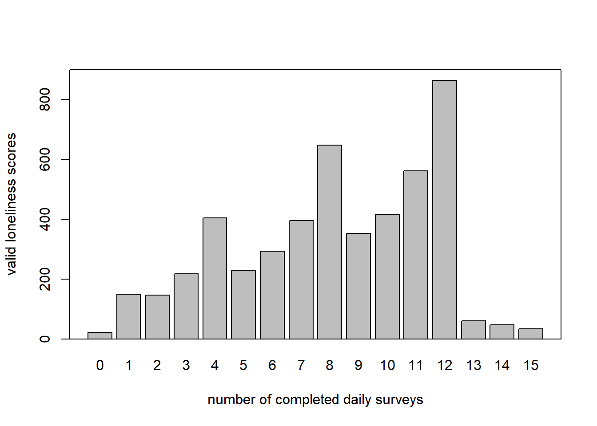
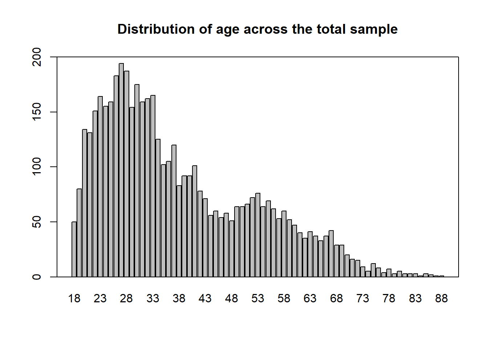

6.2 Working with code from articles
In data science it is also a useful skill to work with open science articles. These articles show their code and show how they got their data. In this part of the page I look at some code and try to reproduce it of a random article. The article is found here
When looking at the code I can see that the data analysts first made some function for the purpose of creating some graphs. After this the load in the required data and look for missing value data. After cleaning the data the started making some graphs.
One of the things that I look at when analysing the code is if the code hase comments describing what is being done in the code. This code has comments above every code but the comment are not always as clear as can be.
After I analysed the code I copied some of the code to look at how easy it is to reproduce the article.
library(here)
# read data ---------------------------------------------------------------
# sample 1
sample1 <- read.csv(here("data","sample1_use for revision 1.csv"))
sample1 <- sample1[sample1$include_1,]
# sample 2
sample2 <- read.csv(here("data","sample2_use for revision 1.csv"))
sample2 <- sample2[sample2$include_1,]
# combine samples for the additional analyses
data <- rbind(sample1, sample2)
# packages ----------------------------------------------------------------
# functie inladen
gg_color_hue <- function(n) {
hues = seq(15, 375, length = n + 1)
hcl(h = hues, l = 65, c = 100)[1:n]
}
get_max_daily <- function(x){
x <- x + c(1:4, 9:12, 17:20, 25:27)
x <- x[x < ymd("2020-04-13 UTC")]
return(x)
}
# install.packages("lubridate")
library(lubridate)
# -------------------------------------------------------------------------
## define colors
c <- gg_color_hue(2)
col.s1 <- c[1]
col.s2 <- c[2]
# completed baseline surveys per day that are included in the study
data_l2_s1 <- unique(sample1[c("ID", "b_baseline_ended")])
data_l2_s2 <- unique(sample2[c("ID", "b_baseline_ended")])
# no missings on this variable
any(is.na(data_l2_s1[2]))## [1] FALSEany(is.na(data_l2_s2[2]))## [1] FALSEdate_s1 <- ymd_hms(data_l2_s1$b_baseline_ended)
hour(date_s1) <- 0
minute(date_s1) <- 0
second(date_s1) <- 0
date_s2 <- ymd_hms(data_l2_s2$b_baseline_ended)
hour(date_s2) <- 0
minute(date_s2) <- 0
second(date_s2) <- 0
# number of baseline surveys completed
t_date_baseline_1 <- table(ymd(date_s1))
t_date_baseline_2 <- table(ymd(date_s2))
t_date_baseline_1 <- c(t_date_baseline_1, "2020-04-12" = 0)
t_date_baseline_12 <- rbind(t_date_baseline_1, t_date_baseline_2)
# barplot sample 1 and 2 baseline participation ---------------------------
layout(matrix(1:2, 1, 2, byrow = TRUE))
b <- barplot(t_date_baseline_12, beside = TRUE, ylim = c(0, 800), names.arg = rep("", length(t_date_baseline_12)),
col = c(col.s1, col.s2), axes = FALSE)
box()
axis(2, las = 2, cex.axis = 0.8)
s <- seq(1, 28, 7)
labels <- colnames(t_date_baseline_12)[s]
axis(1, at = ((b[1,] + b[2,])/2)[s], labels = labels, cex.axis = 0.8)
text("A", x = ((b[1,] + b[2,])/2)[2], y = 800*.9, cex = 4, col = "grey")
legend(x = ((b[1,] + b[2,])/2)[15], y = 800, legend = c("Sample 1", "Sample 2"), fill = c(col.s1, col.s2), bty = "n")
# dates at which a daily survey could have been completed:
max_daily_dates_s1 <- lapply(ymd(date_s1), get_max_daily)
max_daily_dates_s2 <- lapply(ymd(date_s2), get_max_daily)
max_dates_s1 <- do.call("c", max_daily_dates_s1)
max_dates_s2 <- do.call("c", max_daily_dates_s2)
obtained_dates_s1 <- sample1$daily_date
obtained_dates_s2 <- sample2$daily_date
t_max_dates_s1 <- table(max_dates_s1)
t_max_dates_s2 <- table(max_dates_s2)
t_obtained_dates_s1 <- table(obtained_dates_s1)
t_obtained_dates_s2 <- table(obtained_dates_s2)
t_obtained_dates_s12 <- rbind(t_obtained_dates_s1, t_obtained_dates_s2)
b <- barplot(t_obtained_dates_s12, beside = TRUE, ylim = c(0, 2000),
names.arg = rep("", length(t_obtained_dates_s12)),
col = c(col.s1, col.s2), axes = FALSE)
box()
axis(2, las = 2, cex.axis = 0.8)
labels <- colnames(t_obtained_dates_s12)[s]
axis(1, at = ((b[1,] + b[2,])/2)[s], labels = labels, cex.axis = 0.8)
lines(y = t_max_dates_s1, x = b[1,], type = "p", pch = "-", col = col.s1, cex = 1.5)
lines(y = t_max_dates_s2, x = b[2,], type = "p", pch = "-", col = col.s2, cex = 1.5)
text("B", x = ((b[1,] + b[2,])/2)[2], y = 2000*.9, cex = 4, col = "grey")
legend(x = ((b[1,] + b[2,])/2)[15], y = 2000, legend = c("Sample 1", "Sample 2"), fill = c(col.s1, col.s2), bty = "n")
# difference obtained and maximum -----------------------------------------
obtained_total <- sum(t_obtained_dates_s12)
max_reports_total <- sum(c(t_max_dates_s1, t_max_dates_s2))
round(obtained_total/max_reports_total*100, 2)## [1] 75.74# average surveys per day -------------------------------------------------
median(colSums(t_obtained_dates_s12))## [1] 1468# average number of loneliness scores per participant ---------------------
s1_lst <- split(sample1, f = sample1$ID)
n_1 <- unlist(lapply(s1_lst, function(x) sum(!is.na(x$loneliness))))
mean(n_1)## [1] 8.150741sd(n_1)## [1] 3.359446range(n_1)## [1] 0 15s2_lst <- split(sample2, f = sample2$ID)
n_2 <- unlist(lapply(s2_lst, function(x) sum(!is.na(x$loneliness))))
mean(n_2)## [1] 8.124586sd(n_2)## [1] 3.399153range(n_2)## [1] 0 15# distribution of participants across number of daily surveys
layout(1)
b <- barplot(table(c(n_1, n_2)), main = "", ylab = "valid loneliness scores",
xlab = "number of completed daily surveys",
ylim = c(0, 900), lwd = 1.3)
box(lwd = 1.3)
# surveys, not valid measures
n_1 <- unlist(lapply(s1_lst, function(x) nrow(x)))
n_2 <- unlist(lapply(s2_lst, function(x) nrow(x)))
mean(n_1)## [1] 8.269769sd(n_1)## [1] 3.318693range(n_1)## [1] 1 15mean(n_2)## [1] 8.25207sd(n_2)## [1] 3.359575range(n_2)## [1] 1 15b <- barplot(table(c(n_1, n_2)), main = "", ylab = "N",
xlab = "number of completed daily surveys",
ylim = c(0, 1000), lwd = 1.3)
box(lwd = 1.3)
# N and measurement occasions ---------------------------------------------
sample1_lst <- split(sample1, f = sample1$ID)
sample2_lst <- split(sample2, f = sample2$ID)
length(sample1_lst)## [1] 2428length(sample2_lst)## [1] 2416length(sample1_lst) + length(sample2_lst)## [1] 4844nrow(sample1)## [1] 20079nrow(sample2)## [1] 19937nrow(sample1) + nrow(sample2)## [1] 40016# demographic variables ---------------------------------------------------
names <- names(sample1)
variables_level_2 <- grep(x = names, pattern = "ID|group|b_|var_|federal", value = TRUE)
data_l2_s1 <- unique(sample1[variables_level_2])
data_l2_s2 <- unique(sample2[variables_level_2])
## age
mean(data_l2_s1$b_demo_age_1)## [1] 37.29462sd(data_l2_s1$b_demo_age_1)## [1] 14.32523mean(data_l2_s2$b_demo_age_1)## [1] 37.57201sd(data_l2_s2$b_demo_age_1)## [1] 14.24426# generate level 2 data frame for all participants
data_l2 <- unique(data[c(grep(x = names(data), pattern = "ID|b_demo|b_work|b_corona", value = TRUE))])
mean(data_l2$b_demo_age_1)## [1] 37.87923sd(data_l2$b_demo_age_1)## [1] 14.40773barplot(table(data_l2$b_demo_age_1), main = "Distribution of age across the total sample", lwd = 1.3, ylim = c(0, 200))
box(lwd = 1.3)
## quartiles of age
quantile(data_l2$b_demo_age_1)## 0% 25% 50% 75% 100%
## 18 27 34 48 88There are a few things I had to change within the code:
I had to change the path the data was led to
Some functions where loaded in another file, I copied them to the code, the functions were: “gg_color_hue†and “get_max_dailyâ€
One of the things with the output of the graphs is that they don’t contain y-axis descriptions. This article was pretty easy to reproduce the code only needed a few changes. To rate the article on reproducible I would rate it about a four on a scale of one to five.